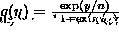
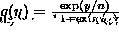

You should be able to derive the following items:
Starting values.
Straight forward to solve  , where for example
 for the binomial etc.
, where for example
 for the binomial etc.
We discussed the Newton-Raphson to solve the score equations.
A common statistical way of simplifying Newton-Raphson, is to replace the matrix of second derivatives, with it's Expected value, that is the expected information. This is called the method of Fisher Scoring.
For the special case of canonical link exponential family models it turns out that Fisher scoring is identical to Newton Raphson.